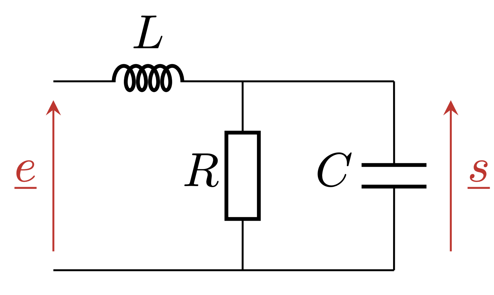
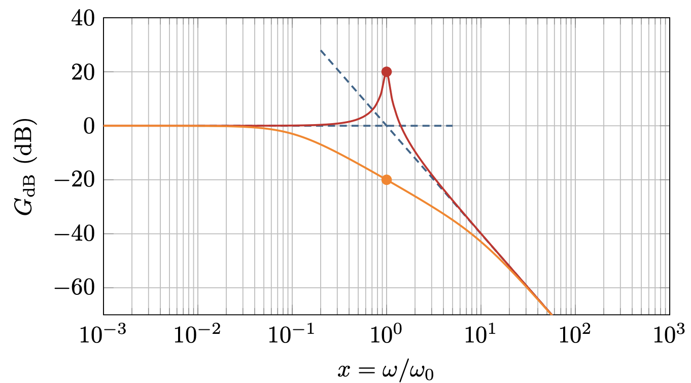

PrepOral
[PT] [Maison] [3]
Passe-bas ordre 2
Enoncé

1. Calculer la fonction de transfert $\underline{H}$ du filtre ci-dessus et la mettre sous la
forme canonique : $\underline{H}=\frac{1}{1-x^2+jx/Q}$ avec $x=\omega/\omega_0$.
2. Représenter le diagramme de Bode asymptotique du filtre et en déduire qualitativement
le tracé réel pour $Q=0,1$ puis $Q=10$.
On considère un signal avec une composante continue égale à $1 \; V$, un fondamental de fréquence $1 \; kHz$
d’amplitude $3 \; V$, et un bruit de fréquence $20 \;kHz$ d’amplitude $100 \; mV$ déphasé de $\pi/2$.
3. Calculer la valeur moyenne et la valeur efficace du signal.
4. Donner le signal en sortie du filtre, on donne $\omega_0=2\pi\times 10^4 \; rad.s^{-1}$ et
$Q=0,1$.
5. Proposer un filtre qui permettrait de se débarrasser de la composante continue.
Commentaires
Encore jamais posé !
Corrigé
1. $$\omega_0=\frac{1}{\sqrt{LC}} \; \; Q=R\sqrt{\frac{C}{L}}$$ 2. 
3. $\overline{e}=0$ et $e_{eff}=\sqrt{e_0^2+e_1^2/2+e_2^2/2}$
4. On a : $$s=e_0+\frac{e_1}{\sqrt{2}} \cos{(\omega t-\pi/4)} + \frac{e_2}{\sqrt{20}} \sin{(\omega t +\pi/2 + Arctan(3/20))}$$ 5. Circuit RC aux bornes de R ou RLC série aux bornes de la bobine, choix des composants?